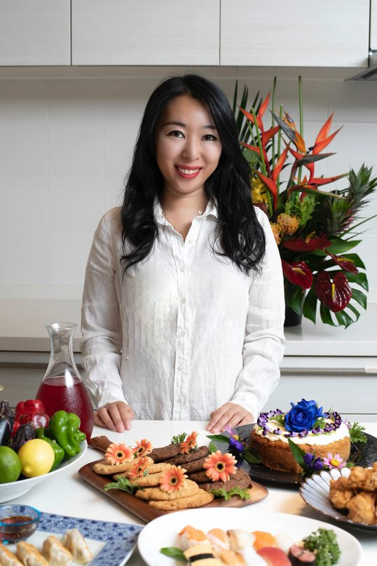
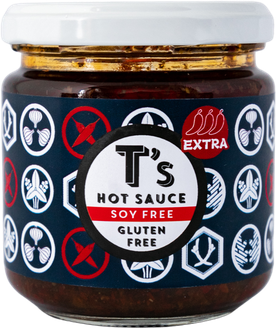

COMPANY
About Us
Iino Corporation — Gluten Free T's Kitchen

Company profile
| Company | Iino Co., Ltd. |
|---|---|
| Address | 2-35-8 Eitai, Koto-ku, Tokyo 135-0034 |
| Established | November 1, 1976 |
| Representative | Takako Iino, CEO |
| Capital | 10 million yen |
| Business |
|
| Restaurants |
|
| Major clients | Amazon Japan G.K. / 日本酒類販売株式会社 / 国分グループ本社株式会社 / 井辻食産 / 新潟製粉 |
| Group company | 株式会社たいのいかこ |
| Contact | TEL 03-6874-7719 E-mail 61@glutenfree.co.jp |
Awards
- GIG — First certified gluten-free restaurant in Asia
- Food Action Nippon Award 2019 (MAFF) — Amazon Award
- Gluten-Free Product of the Year 2020, Canada — Pantry category Grand Prix
PHILOSOPHY
Our philosophy
"A new food culture — savoring possibilities, not restrictions."
We offer gluten-free food not as a special restricted diet, but as one of many food choices — spreading a food culture where health and great taste go hand in hand.
CONCEPT
From dietary restrictions to delicious possibilities.
We serve soul-warming food, aiming to bring smiles to everyone who needs gluten-free.
- Trust backed by international certification, and our own know-how
- Products everyone can enjoy, even with gluten allergies or dietary restrictions
- Independent research on gluten and other allergies since 2015
VISION
Expanding food diversity.
Our vision is to expand food diversity — vegan, halal, vegetarian and more.
- Bringing Japan's unique umami to the world
- Over 700 original recipes and products developed
Our businesses
We put our extensive experience with gluten-free and allergy-friendly food to work across our businesses.


History
- Opened "Gluten Free 61 Cafe and bar" in Roppongi 1-chome
- Helped launch Uber Eats Japan's first gluten-free category, joining as its first restaurant
Moved to Roppongi 7-chome and opened "Gluten Free T's Kitchen"
Ranked No.1 of 95,148 restaurants in Tokyo on Tripadvisor
Validated Gluten Free Safe Spot — Asia's first GIG-certified gluten-free restaurant
Food Action Nippon Award 2019 (MAFF), Amazon Award
Gluten-Free Product of the Year 2020 Canada, Pantry category Grand Prix
Selected as a "2020 Popular Restaurant in Minato" on Google Business
Ranked 15th nationwide among restaurants popular with international visitors on Tripadvisor
- Featured on the front page of The Japan Times as a well-known gluten-free restaurant in Japan
- Featured on the Tokyo Metro website's February banner
- Opened our 2nd location on the ground floor of APA Hotel Ueno-Hirokoji
- December: first book, a rice-flour healthy plate cookbook by a gluten-free chef, published by Shufu to Seikatsu Sha
- April: 3rd location opened in Harajuku

MEDIA ・ June 2021
The Japan Times
As Asia's first gluten-free restaurant built to international standards, and as someone bringing true gluten-free to Japan, our owner was featured on the front page of The Japan Times and recognized internationally.
In Asia, including Japan, gluten-free knowledge has yet to reach international standards, so many products labeled gluten-free would not actually qualify.